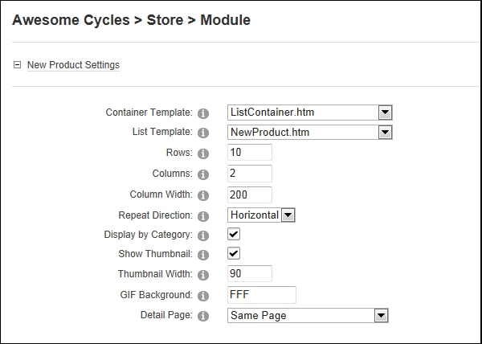
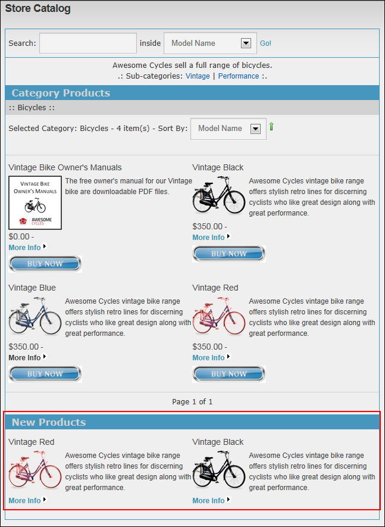

Managing New Product Settings
How to set the layout of new product listings in the Store Catalog module.
Prerequisite. The "Show New Products" field must be checked in the General Settings section to configure these settings. See "Managing Store Catalog General Settings"
- Go to the Store Catalog module.
-
- Select the Catalog Settings tab.
- Maximize
 the New Product Settings section and modify any of the following settings:
the New Product Settings section and modify any of the following settings: - At Container Template, select the template to be applied to the default Catalog page.
- At List Template select the template to be applied to the default Catalog page.
- In the Rows text box, enter the number of row of items to be displayed across the page. The default setting is 10.
- In the Columns text box, enter the number of columns of items to be displayed down the page. The default setting is 2.
- In the Column Width text box, enter the pixel width of each column. The default setting is 200.
- In the Repeat Direction text box, select either Horizontal or Vertical to set the direction that items incrementally repeat. I.e. Either down or across the page respectively.
- At Show Thumbnail, select from these options:
- Mark
 the check box to display a thumbnail image.
the check box to display a thumbnail image.- In the Thumbnail Width text box, enter the pixel width of each thumbnail image.
- In the GIF Background text box, enter the hex value of the background color to use with GIF image format. The default setting is white (FFF). Valid hexadecimal values are #FFFFFF, #f00, FF0000, F09, etc.
- Unmark
 the check box to hide the thumbnail image.
the check box to hide the thumbnail image.
- At Detail Page, select the page where product details are displayed. Choose Same Page to open the product details on the same page. This is the typical behavior however if you have multiple Store Catalog modules on your site and you want the product details to be displayed on that page, then select that page name.

-
Click the Update button.
